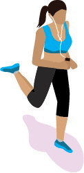

August 26, 2019
project one : personal isometric avatar

Project one is an isometric avatar design which portrays an aspect of myself. I found designing myself a little difficult. However, after doing some research I was able to find isometric examples that helped me create my figure. My avatar is displayed running and listening to music, which is one of the activities I reach to do daily.